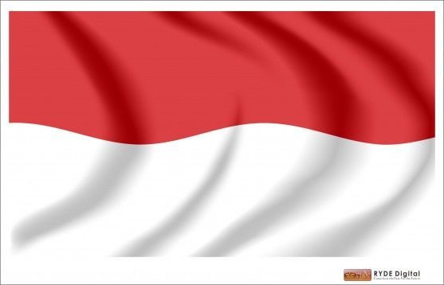

Republik Indonesia (RI) atau Negara Kesatuan Republik Indonesia (NKRI), atau lebih umum disebut Indonesia, adalah negara di Asia Tenggara yang dilintasi garis khatulistiwa dan berada di antara daratan benua Asia dan Australia, serta antara Samudra Pasifik dan Samudra Hindia. Indonesia adalah negara kepulauan terbesar di dunia yang terdiri dari 17.504 pulau. Nama alternatif yang biasa dipakai adalah Nusantara. Dengan populasi Hampir 270.054.853 juta jiwa pada tahun 2018, Indonesia adalah negara berpenduduk terbesar keempat di dunia dan negara yang berpenduduk Muslim terbesar di dunia, dengan lebih dari 230 juta jiwa. Bentuk negara Indonesia adalah negara kesatuan dan bentuk pemerintahan Indonesia adalah republik, dengan Dewan Perwakilan Rakyat, Dewan Perwakilan Daerah dan Presiden yang dipilih secara langsung. Ibu kota negara Indonesia adalah Jakarta. Indonesia berbatasan darat dengan Malaysia di Pulau Kalimantan, dengan Papua Nugini di Pulau Papua dan dengan Timor Leste di Pulau Timor. Negara tetangga lainnya adalah Singapura, Filipina, Australia, dan wilayah persatuan Kepulauan Andaman dan Nikobar di India.
Kolonialisme
Indonesia juga merupakan negara yang dijajah oleh banyak negara Eropa dan juga Asia, karena sejak zaman dahulu Indonesia merupakan negara yang kaya akan hasil alamnya yang berlimpah, hingga membuat negara-negara Eropa tergiur untuk menjajah dan bermaksud menguasai sumber daya alam untuk pemasukan bagi negaranya, Negara-negara yang pernah menjajah Indonesia antara lain :
- Portugis pada tahun (1509-1595).
- Spanyol pada tahun (1521-1692}.
- Belanda pada tahun 1602.
- Perancis pada tahun (1795-1811).
- Britania Raya pada tahun (1811-1816).
- Jepang pada tahun (1942-1945).
PENDIDIKAN
Sesuai dengan konstitusi yang berlaku, yaitu berdasarkan UUD 1945 pasal 31 ayat 4 dan Undang-Undang nomor 20 tahun 2003 tentang sistem pendidikan nasional, bahwa pemerintah Indonesia baik pusat maupun daerah mesti mengalokasikan anggaran untuk pendidikan sebesar 20% dari APBN dan APBD di luar gaji pendidik dan biaya kedinasan. Namun pada tahun 2007, alokasi yang disediakan tersebut baru sekitar 17.2 %, jauh lebih rendah dibandingkan dengan negara Malaysia, Thailand, dan Filipina yang telah mengalokasikan anggaran untuk pendidikan lebih dari 28%.
Sumber Daya Alam Indonesia berupa minyak bumi, timah, gas alam, nikel, kayu, bauksit, tanah subur, batu bara, emas, dan perak dengan pembagian lahan terdiri dari tanah pertanian sebesar 10%, perkebunan sebesar 7%, padang rumput sebesar 7%, hutan dan daerah berhutan sebesar 62%, dan lainnya sebesar 14% dengan lahan irigasi seluas 45.970 km.